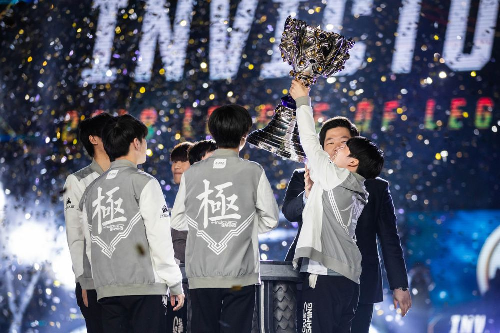

2018년 월드 챔피언십, 그리고 테마곡.
우승팀: Invictus Gaming (IG)
| 출전 멤버 | |||||
| Top | Jungle | Mid | AD Carry | Support | |
|---|---|---|---|---|---|
| TheShy | Duke | Ning | Rookie | JackyLove | Baolan |
테마곡 : Rise
 이미지 클릭시 이동합니다
이미지 클릭시 이동합니다
영상은 2017 롤드컵 내용을 기반으로 만들어졌다. 주인공은 카직스, 세주아니, 자르반 4세의 무기를 준비하고 산을 오르는 앰비션.
까마귀 소리와 함께 2016 롤드컵 깃발이 펄럭이는 어느 황야에서 결승전 5세트 마지막에 나온 SKT 우승콜이[2] 희미하게 들리면서 영상이 시작된다.
우승콜이 끝나자 역대 롤드컵에서 패배한 팀들의 깃발과 여러 챔피언들의 무기가 널부러져 있는 패배자들이 모인 황야에서 2016 롤드컵 결승전에서 SKT에게 패배했던 앰비션이 일어난다.
정신을 차린 앰비션은 지친 모습을 보이지만 곧 다시 일어나며 자신의 무기들을 정비한다. 그리고 역대 롤드컵 참가 팀들의 배너를 등 뒤로 하며 다시 정상을 노리기 위해 산을 오른다.
가장 먼저 만난 그룹 스테이지 G2 Perkz의 야스오를 카직스의 갈고리로 꺾고, RNG Uzi의 베인을 세주아니의 철퇴로 맞상대해 뚫고 지나가고,
계속해서 산을 올라 역대 우승자의 로고가 새겨진 소환사 석상이 즐비한 산 정상에 다다르게 된다. 2017 우승팀 로고가 새겨질 소환사 석상은 비어 있는 상태.
그리고 그 정상에서 기다리고 있던 SKT Faker의 라이즈를 자르반 4세의 깃창으로 접근해 대격변을 사용해 물리쳐 우승을 거머쥐고, 마침내 비어 있던 소환사 석상에 삼성 갤럭시의 로고가 새겨진다.
정상에서 포효하는 앰비션을 뒤로 하고 다시 산 아래를 비추며 2018 롤드컵 진출팀들이 정상을 향해 도전하는 모습을 보여준다. 그리고 영상 초반 앰비션이 쓰러져 있던 패배자들의 황야에서 우지가 눈을 뜨며 영상이 끝난다.